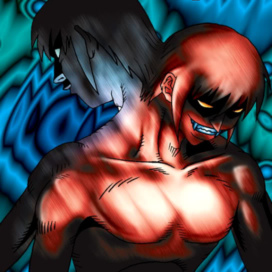

Kageningen

Description: "Whenever damage is inflicted to LP in battle, the damage amount is reduced to 0. When this card is flipped face-up, adds one more Kageningen face-up in own Summoning Area."
STATS
ATK: 800
DEF: 600DECK COST
Deck Cost per Card: 19EFFECT NOT IMPLEMENTED
Fusion List (21 Possible Fusions)
- Kageningen + Ancient Jar = Minomushi Warrior
- Kageningen + Ancient Tree of Enlightenment = Bean Soldier
- Kageningen + Armored Rat = Tiger Axe
- Kageningen + Bat = Cyber Soldier
- Kageningen + Cyber Commander = Cyber Soldier
- Kageningen + Dancing Elf = Celtic Guardian
- Kageningen + Fiend's Hand = Zombie Warrior
- Kageningen + Jinzo #7 = Cyber Soldier
- Kageningen + Kagemusha of the Blue Flame = Charubin the Fire Knight
- Kageningen + Little Chimera = Tiger Axe
- Kageningen + Mech Mole Zombie = Zombie Warrior
- Kageningen + Milus Radiant = Tiger Axe
- Kageningen + Morphing Jar = Minomushi Warrior
- Kageningen + Obese Marmot of Nefariousness = Tiger Axe
- Kageningen + Pot the Trick = Minomushi Warrior
- Kageningen + Rainbow Flower = Bean Soldier
- Kageningen + Shadow Specter = Zombie Warrior
- Kageningen + Silver Fang = Tiger Axe
- Kageningen + Stone Ghost = Minomushi Warrior
- Kageningen + The Immortal of Thunder = Kaminari Attack
- Kageningen + Wicked Dragon with the Ersatz Head = Dragon Statue